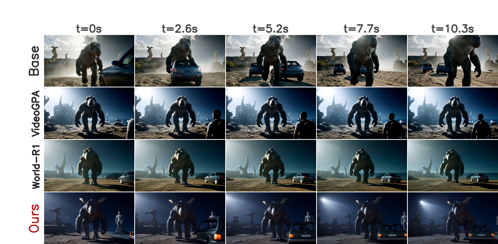

Cat running with a fish
Base
World-R1
VideoGPA
Stream4D
The base model’s video motion is overly strong and unnatural, with noticeable jittering.
Reinforcement learning with dynamic 4D reconstruction rewards for coherent moving worlds.
1UCLA 2Tsinghua University

Static-3D rewards suppress motion; Stream4D keeps dynamic scenes moving. In this LongLive rollout, the base contains large but unstable motion, World-R1 and VideoGPA move toward more rigid low-motion scenes, and Stream4D keeps the cat running while preserving a coherent subject and background.
Streaming autoregressive diffusion models enable real-time, long-horizon video generation, but local frame objectives do not directly enforce the geometry and dynamics of a coherent world. Long rollouts therefore accumulate geometric drift, inconsistent object identity, and unnatural scene motion.
Recent reward-based methods use static 3D Gaussian-Splatting reconstruction to encourage consistency. However, a single rigid 3D reconstruction cannot model dynamic objects, so genuine object motion becomes reconstruction error and the reward can be maximized by freezing the scene. This shortcut is especially harmful in the autoregressive setting, where each generated chunk propagates the previous chunk's mistakes.
Stream4D replaces the static critic with a feed-forward 4D Gaussian-Splatting reconstruction reward that explicitly represents scene dynamics. We combine this 4D reconstruction term with a target-centered natural-motion prior and a lightweight perceptual anchor. Across Self-Forcing, Causal-Forcing, and LongLive backbones, Stream4D improves 4D reconstruction quality while preserving motion and human-aligned video preference.
MoVieS reconstructs each rollout as a dynamic 4D Gaussian scene and re-renders it at estimated cameras. High reward means the video can be explained as a coherent evolving scene.
A peaked Gaussian target on scene-flow magnitude encourages enough motion, but not runaway blur. Smoothness and rigidity terms penalize jitter and spatially erratic flow.
HPSv2 stabilizes appearance so the policy does not trade visual quality for geometry and motion reward. The three axes are z-normalized and summed.
| Backbone | MoVieS 4D-PSNR gain | Gemini Consistency win% | VideoReward Overall win% |
|---|---|---|---|
| Self-Forcing | +3.46 dB | 82.2% | 66.2% |
| Causal-Forcing | +5.53 dB | 73.9% | 76.0% |
| LongLive | +6.76 dB | 74.2% | 84.4% |
Compared with each backbone's distilled base on the 500-prompt motion-prominent evaluation set. A LongLive human study further confirms that people prefer Stream4D over static-3D reward baselines.
The base model’s video motion is overly strong and unnatural, with noticeable jittering.
The character motion in the base model is inconsistent with the background. The character appears to be walking forward but moves to the right, creating a noticeable floating effect.
The motion disappears in the World-R1 and VideoGPA.
The public paper link will be added here after release.
BibTeX will be updated after release.
@article{ban2026stream4d,
title = {Stream4D: 4D-Consistency for Streaming Autoregressive Diffusion Video Models},
author = {Ban, Yuanhao and Feng, Jiaqi and Zhou, Hengguang and Pei, Xiaohuan and Cui, Justin and Hsieh, Cho-Jui},
journal = {Under review},
year = {2026}
}